Two-dimensional ferroelectric tunnel junction: the case of SnSe
Xin-Wei Shen
,
Yue-Wen Fang
1,†
, Bo-Bo Tian
, Chun-Gang Duan
1,2,*
State Key Laboratory of Precision Spectroscopy and Key Laboratory of Polar Materials and Devices, Ministry of Education, East China Normal
University, Shanghai, 200241, China
Collaborative Innovation Center of Extreme Optics, Shanxi University, Taiyuan, Shanxi 030006, China
* Correspondence and requests for materials should be addressed to C.G.D. (cgduan@clpm.ecnu.edu.cn)
(Date: 6 July 2018)
n
-type semiconductor homostructure, coupling the electron tunneling with the robust in-
% is obtained.
Ferroelectrics exhibiting spontaneous electric polarization (
P
s
) play a crucial role in the modern information era. The
opposite polarization states +
P
s
and -
P
s
in ferroelectric materials can be switched upon application of an electric field. This
binary operation under uniform polarization reversal makes ferroelectrics a promising material for use in non-volatile
memory applications, and opens up a wide range of practical applications in data storage devices
1-5
. Among the prototypical
model devices, ferroelectric tunnel junctions (FTJs), which are typically composed of a thin ferroelectric layer sandwiched
by two metallic electrodes, have attracted significantly increasing research interest
6-11
owing to the availability of giant
tunneling electroresistance (TER) effect
12,13
. The mechanism can be affected by changing different electrodes or adopting
Ferroelectric tunnel junctions (FTJs) have triggered considerable attention in the advanced applications of non-volatile
information devices. However, critical thickness for ferroelectricity limits FTJs towards their applications at the nanoscale.
Recently, some two-dimensional (2D) materials have been reported to show intrinsic in-plane ferroelectricity. Here, through the
opposite dopants on the two sides of the monolayer group-IV monochalcogenides (GIVMs), we design a novel 2D-FTJ employing
p
-type semiconductor/ferroelectric/
plane ferroelectricity. This structure makes it possible to dynamically modulate tunneling barrier height as well as the width
through ferroelectric switching, and promises to realize a significantly enhanced tunneling electroresistance (TER) effect.
Combining first-principles calculations with non-equilibrium Green’s function formalism, herein, we reveal this mechanism by
using In:SnSe/SnSe/Sb:SnSe homostructure as a prototypical example, where a large TER effect of around 1460
Compared with the normal vertical FTJs, this lateral 2D-FTJ enormously improves the TER ratio and shows exciting prospects
for device applications with higher data integration and reliable information retention in the future.
asymmetric electrode/ferroelectric interfaces. The electron tunneling mechanism requires that the ferroelectricity of
insulating barrier should be sustained at nanometer scale, which is decisive for the occurrence of direct tunneling
. Over
the past few decades, fortunately, the emergence of high-quality ultrathin ferroelectric films
15-19
makes it possible to achieve
the FTJ devices.
However, the preparation of stable ferroelectricity in a few unit cells is still challenging. For example, as the pioneer
of ferroelectrics, perovskite oxides thin films
20-24
have been widely adopted as the ferroelectric tunneling barrier, whereas
sophisticated experimental approaches such as strain engineering
, interface engineering
, and careful control of epitaxial
growth
are generally required
to maintain ferroelectricity in nanometre-thick oxide films. On account of the critical
thickness in traditional ferroelectrics
28-30
, another approach is to find inherent atomic-thick materials with robust nanoscale
ferroelectricity. Recently, a great deal of new members of ferroic family have been substantially demonstrated at layered
van der Waals materials
31-37
. In particular, the discovery of intrinsic ferroelectricity in two-dimensional (2D) materials is
attractive for breaking through the restriction of the critical thickness in traditional ferroelectrics, and hence they are
showing great potential for the applications of next-generation nanoelectronic devices.
A pristine
monolayer MXs
semiconductor with in-plane ferroelectricity serves as a tunneling barrier.
The left and right electrodes are obtained by
p
-type and
n
-type
doping of the same MXs, resulting in a homostructural tunneling device. The inset illustrates the wave nature of the quantum tunneling.
As the ferroelectric polarization (
P
s
) is rightward polarized, the left energy barrier (
Φ
) is raised up beyond the energy of electrons.
Through the quantum-mechanical phenomenon, in this case, the electrons tunnel across the barrier material in the nature of evanescent
state since its amplitude decays exponentially through the barrier.
image.2.1[405*12]
image.2.2[405*12]
image.2.3[405*12]
 image.2.4[405*12]
image.2.5[405*12]
image.2.4[405*12]
image.2.5[405*12]
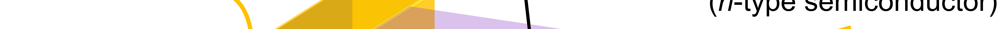
image.2.6[405*12]
image.2.7[405*12]
image.2.8[405*12]
image.2.9[405*12]
 image.2.10[405*12]
image.2.11[405*12]
image.2.12[405*12]
image.2.13[405*12]
image.2.14[405*12]
image.2.15[405*12]
image.2.16[405*12]
image.2.17[405*12]
image.2.18[405*12]
image.2.19[405*12]
image.2.20[405*12]
image.2.21[405*12]
image.2.22[405*9]
image.2.10[405*12]
image.2.11[405*12]
image.2.12[405*12]
image.2.13[405*12]
image.2.14[405*12]
image.2.15[405*12]
image.2.16[405*12]
image.2.17[405*12]
image.2.18[405*12]
image.2.19[405*12]
image.2.20[405*12]
image.2.21[405*12]
image.2.22[405*9]
Figure 1 | Schematic diagram of a two-dimensional (2D) ferroelectric tunnel junction (FTJ) device.
In this Letter, by combining robust in-plane ferroelectricity with electron tunneling, we propose a distinctive FTJ
consisted of homostructural 2D ferroelectric materials, as illustrated in Fig. 1. Different from a conventional vertical
tunneling junctions, this lateral 2D-FTJ in our study features a barrier region of group-IV monochalcogenides (MXs)
monolayer in ferroelectric state, and two electrodes are formed by doped
p
-type and
n
-type MXs semiconductors,
constructing a
p
-type semiconductor/ferroelectric/
n
-type semiconductor (
p
-SC/FE/
n
-SC) homostructure. Owing to the
different screening lengths exhibited in the two electrodes, the potential energy profile at the semiconductor/ferroelectric
interface is asymmetric. Therefore, the resistance switching in 2D
p
-SC/FE/
n
-SC FTJ is associated with the inequivalent
tunneling barrier height on the reversal of polarization in the ferroelectric barrier. In addition, the electron tunneling
transmission also relies exponentially on the barrier width. Very recently, an enhancement of TER effect depending on
ferroelectric modulated barrier width by using a doped semiconductor as the electrode has been reported in experimental
works
38-40
. Combining the phenomenological model and first-principles calculations, we demonstrate this 2D
p
-SC/FE/
n
-
SC FTJ also provides the possibility to realize this barrier width altering mechanism. Owing to the polarization field effect
,
the majority carriers can be accumulated or depleted near two doped semiconductor surfaces in response to the polarization
reversal, leading to the tunability of effective tunneling barrier width. Furthermore, the interfacial ferroelectric insulator
becomes conducting as a result of reversible metallization of the barrier according to the band alignment
. Taking the two
distinct contributions into account, the effective barrier width can be dynamically manipulated via the electrical control of
ferroelectric polarization reversal. Consequently, through ferroelectric modulation of barrier height together with the barrier
width in our novel 2D-FTJ, the electronic resistance through the junction can be switched between two states allowing
either a large (ON) or small (OFF) flow of the current from one side to the other, is therefore expected to achieve an
enhanced TER effect, offering a significant potential in the next-generation memory applications.
The schematic diagram of the 2D
p
-SC/FE/
n
-SC FTJ with two opposite ferroelectric
states is depicted in Fig. 2a. Both electrodes can be realized by heavy impurity doping. Below a critical thin thickness, the
behavior of electrons transporting through the barrier can be described by quantum mechanics, i.e., dominated by direct
tunneling. According to the basic Wentzel-Kramers-Brillouin (WKB) approximation
43,44
, the TER ratio in terms of
ferroelectric polarization reversal can be approximated as follows
2Δ
TER = =exp
RL
L
JJm
d
J
Φ
Φ
−
ℏ
(1)
Results
Influence factors of TER effect.
where
J
R
(
J
L
)
is the current density in the high (low) conductance state,
d
is the width of ferroelectric barrier,
Φ
is the
average potential barrier height, and
Δ=
RL
ΦΦΦ −
is the height change with reversal of polarization. It is noteworthy that
the barrier width and height are the decisive factors for TER effect, indicating an effective mechanism to realize the TER
enhancement as
d
and Δ
Φ
increase.
p
-SC/FE/
n
-SC FTJ between “ON” (left panel) and “OFF” (right panel) states.
(a) The
respective schematics of 2D-FTJ as ferroelectric polarization is in
P
+
x
and
P
-
x
states. The black plus and minus symbols in the ferroelectric
barrier region represent positive and negative ferroelectric bound charges, respectively. The red plus and blue minus in the semiconductor
electrodes represent hole and electrons, respectively. The circled plus and minus symbols represent ionized donors and acceptors
respectively. The distributions of (b) charge densities and (c) electrostatic potential energy profiles. (d) The overall potential energy
profiles with corresponding band diagrams.
. The 2D monolayer ferroelectric with barrier width
d
is sandwiched between
p
-type doped semiconductor (left electrode) and
n
-type doped semiconductor (right electrode) with corresponding
screening widths of
δ
and
δ
, respectively. Here, we assume
δ
＜
δ
to illustrate the formation of asymmetric potential
Figure 2 | Switching mechanisms of the 2D
Asymmetric potential profile at interface
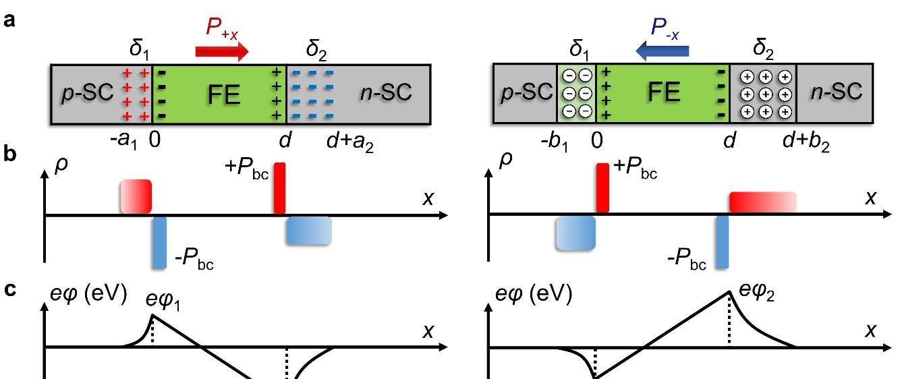
image.4.1[436*183]
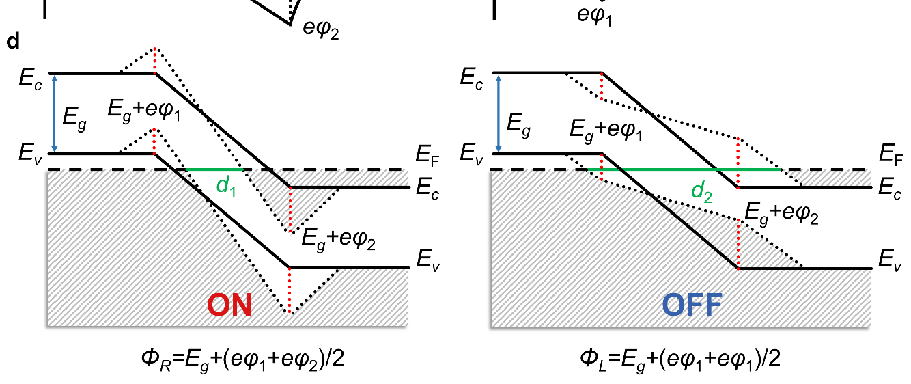
image.4.2[436*183]
energy. When the ferroelectric polarization is taken into account, the ferroelectric bound charge densities
±
P
bc
are induced
at the semiconductor/ferroelectric interfaces, as shown in Fig. 2b. In order to quantitatively understand the interplay
between the resistive switching and tunneling barrier variation as the ferroelectric polarization reversed, we adopt a
Thomas-Fermi screening model
46-48
, and the electrostatic potential within left and right electrodes can be expressed as:
s
0FE
, 1or2
i
i
i
Pd
i
d
δ
ϕ
δδ
εεε
εε
= ± =
++
(2)
where
ε
is the permittivity of free space,
ε
FE
is the relative permittivity of the ferroelectric layer, and
ε
i
is the dielectric
permittivity in electrode
i
(
i
=1 or 2). The sign of “±” depends on polarization orientation (
P
s
) where positive and negative
signs correspond to polarization pointing to and away from this electrode respectively. The Thomas-Fermi screening length
in the left or right electrodes can be obtained by
i
i
i
e
ε
δ
ρ
=
, where
ρ
i
is the density of states at the Fermi energy. Based
on the equation (2), the electrostatic potential energy at semiconductor/ferroelectric interfaces can be calculated as
()()
eeeel
ϕϕϕϕ≡<≡
due to the assumption of
δ
＜
δ
, resulting in asymmetric potential energy profiles, as
shown in Fig. 2c.
The overall barrier
height
Φ
experienced by the tunneling electrons needs to
include the potential energy barrier of the ferroelectric insulator. For simplification, a potential barrier height with forbidden
gap
E
g
seen by tunneling electrons is assumed for the barrier region in paraelectric state. When the ferroelectric polarization
points to the right
n
-type doped electrode (labeled as
P
+
x
state), the average potential barrier height can be obtained as
+(+)2
Rg
Eeφφ
Φ=
, as seen in Fig. 2d. In addition to the barrier height, owing to the specific
p
-SC/FE/
n
-SC
homostructure, the band bending in response to ferroelectric polarization will influence the effective width of the tunneling
barrier. Compared with the width of pristine ferroelectric barrier, the regions near left and right semiconductor/ferroelectric
interfaces become conducting, reducing the effective barrier width
d
＜
d
. Therefore, the device under
P
+
x
state realizes a
low resistance “ON” state.
When polarization is pointing to the left
p
-type doped electrode (labeled as
P
-
x
state), the average potential barrier
height
+()2
Lg
Eeφφ
Φ=+
can be calculated analogous to that in the case of
P
+
x
state. With
δ
＜
δ
, the barrier height
for right polarization
Φ
R
is smaller than the
Φ
L
for the polarization pointing to left, resulting in different height of tunneling
barrier seen by transport electrons. More interestingly, the left and right semiconductor surfaces are depleted of holes and
Mechanism of giant resistance switching.
electrons, respectively, as a result of ferroelectric polarization field effect. The majority carriers disappear near the
semiconductor/ferroelectric interfaces, only leaving the immobile ionized acceptors and donors, as shown in the right panel
of Fig. 2a. Under this condition, two separated insulating space charge regions will be created near the left and right
electrode surfaces. Consequently, the tunneling electrons have to overcome an additional barrier. We further illustrate the
mechanism by showing the band diagram in Fig. 2d. The valence band of
p
-type semiconductor bends downwards below
the Fermi energy (
E
F
), while the conduction band of
n
-type semiconductor bends beyond the
E
F
, thus, increasing the
effective barrier width, i.e.,
d
＞
d
. Compared with the
P
+
x
state, a much wider and higher tunneling barrier is introduced in
P
-
x
state, driving the device enter a low tunneling transmission state, i.e., a high resistance “OFF” state. Therefore, the 2D
p
-SC/FE/
n
-SC FTJs would provide a fascinating platform to realize enhanced TER effect through engineering the barrier
width and barrier height electrically.
To realize the model of
p-
SC/FE/
n
-SC FTJ based on all-2D materials, we
construct a homostructure implemented in the monolayer GIVMs
49-51
which display intrinsic in-plane ferroelectric
polarization with high Curie temperature
52-54
. Taking monolayer SnSe as an example, the atomic structures of such 2D-FTJ
at two polarization states have been illustrated in Fig. 3. The in-plane polarization
P
s
of SnSe reaches up to 1.89×10
C/m.
More excitingly, its estimated Curie temperature
T
c
is around 460 K, implying the possibility of devices working at room
temperature. Compared with the widely studied ferroelectrics such as BaTiO
and PbTiO
with out-of-plane ferroelectric
polarization
, the atomic-thick pristine SnSe displays in-plane ferroelectric polarization along
x
axis on the 2D plane,
namely its
P
+
x
and
P
-
x
states. Note that the in-plane polarization along
y
axis is exactly equivalent to that along
x
axis owing
to the symmetry of monolayer SnSe. The left electrode is hole
doped by replacing a Sn cation with an In atom (In:SnSe),
while the right electrode is electron doped with Sn substituted by Sb atom (Sb:SnSe). The doping concentration of each
semiconductor electrode reaches up to 6.2×10
elections/cm
, resulting in a heavily doped condition. Then, the
homostructure is constructed by stacking unit cells along the [100] direction, where the pristine ferroelectric SnSe with 18
unit cells are in the middle of
p
-type and
n
-type semiconductor electrodes. In contrast to the conventional Metal-
1/ferroelectric/Metal-2 FTJ
or all-oxide FTJ
in which lattice mismatch is naturally generated by the electrodes and
ferroelectric due to their different lattice constants, our In:SnSe/SnSe/Sb:SnSe homostructure completely eliminates the
lattice constant mismatch and will not introduce abrupt structure distortions at the ferroelectric/electrode interfaces. More
importantly, the ferroelectric polarization of monolayer SnSe in this 2D-FTJ is spontaneous, which avoids sophisticated
external methods such as chemically functionalized approach
to maintain ferroelectricity, making it more applicable for
experimental investigations and use in further practical devices.
Configuration of tunnel junction device.
p
-type semiconductor/ferroelectric/
n
-type semiconductor homostructure.
The green region is
the ferroelectric SnSe monolayer. The red and blue arrows correspond to two opposite orientations of polarization along
x
axis. The grey
regions represent the left and right electrodes composed of hole and electron doped SnSe semiconductors, respectively. Only a few unit
cells are presented for illustrating the ferroelectric barrier region and electrode regions here because of the page width limitations.
The stability and robustness of the in-plane ferroelectricity in 2D ferroelectric
materials sandwiched between two doped electrodes lie at the heart of such 2D-FTJ device. To examine the stability of this
in-plane ferroelectricity, we show the total energy evolution during the of ferroelectric switching in Fig. 4 by calculating
the double-well potential profile for the In:SnSe/SnSe/Sb:SnSe homostructure. On account of the two types of electrodes,
the energy potential profile shows an asymmetric feature associated with two inequivalent energy minima, which has also
been observed in our previous study on tricolor-superlattice-based FTJ with asymmetric ferroelectric/electrode interfaces
.
The normalized atomic displacement λ is used to describe the ferroelectric distortion amplitude. Different from a free-
standing ferroelectric material with symmetric potential profile, the paraelectric state with the energy maximum is
approximately located around λ = 0.2, which slightly deviates from the coordinate of zero. The
P
-
x
state with the lowest
energy occurs at λ = -1, while the
P
+
x
state is stabilized at λ = +1. The energy difference between these two opposite
ferroelectric states is estimated to be 161.25 meV for the whole structure. These results confirm the stability of in-plane
ferroelectricity in monolayer SnSe-based FTJ, and also reveal the characteristics of asymmetric ferroelectricity which will
be important to achieve the enhanced TER effect in the following sections.
 image.7.1[421*43]
image.7.2[421*43]
image.7.1[421*43]
image.7.2[421*43]
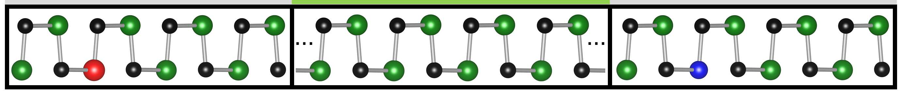
image.7.3[421*43]
Figure 3 | Schematic diagram of the
Effects of inequivalent ferroelectricity.
p-
SC/FE/
n
-
The ion displacements along [100] directions are characterized by λ, where λ = +1 and -1 correspond to the ‘
P
+
x
’ and ‘
P
-
x
’
states, respectively. The energy is summed up to all the atoms in the
p
-SC/FE/
n
-SC supercell. The ‘
P
-
x
’ state with minimum energy is set
as the reference.
Near the semiconductor/ferroelectric interfaces, the reversible
metallization of insulating barrier may be brought about by polarization reversal
. To study this underlying property and
further understand the change of barrier width, we calculate the layer-resolved local density of states (LDOS) for this 2D
p-
SC/FE/
n
-SC FTJ. As shown in Fig. 5a, for the hole doped electrode on the left, the valence band maximum (VBM) lies
beyond the
E
F
, whereas the conduction band minimum (CBM) dips below
E
F
in the electron doped electrode on the right.
According to the difference in work function step between two electrodes
, a notable built-in electric field is generated
here, pointing from right to left across the ferroelectric SnSe barrier. When the ferroelectric polarization is pointing to the
right, the built-in electric field is parallel to the depolarizing field, leading to an obvious band bending existing in the band
alignment, where the valence band or conduction band of ferroelectric SnSe layers near the interface lies in the Fermi level.
As a result, the effective tunnel barrier for the electrons tunneling is reduced in terms of these additional conducting regions
added on the left and right interfaces.
If the polarization orientation is reversed to left, we can find a relatively slight band bending appearing in Fig. 5b as
the built-in electric field is antiparallel to the depolarizing field. In addition, fewer SnSe unit cells become metallic
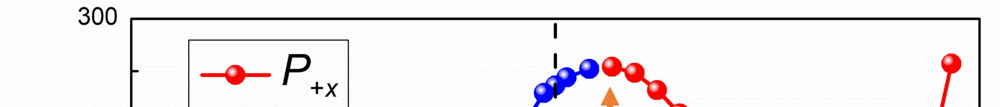
image.8.1[364*39]
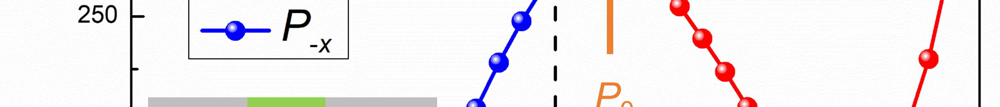
image.8.2[364*39]
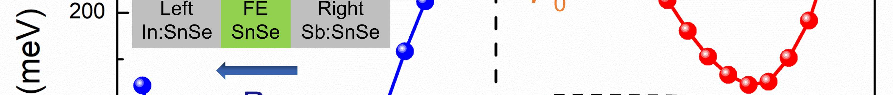
image.8.3[364*39]
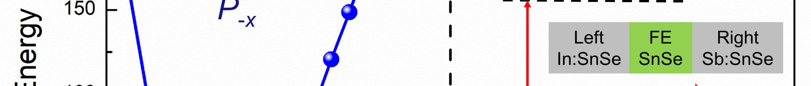
image.8.4[364*39]
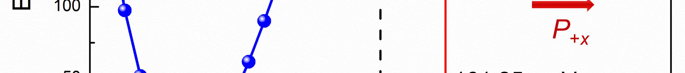
image.8.5[364*39]
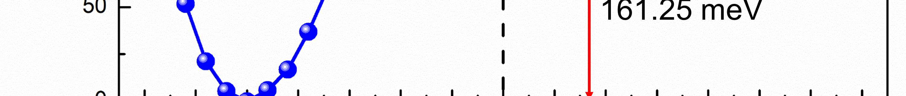
image.8.6[364*39]
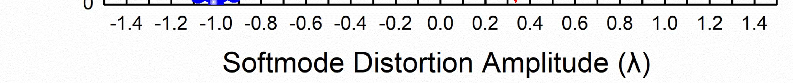
image.8.7[364*39]
Figure 4 | Calculated asymmetric potential energy profile as a function of soft mode ferroelectric distortions in 2D
SC FTJ.
Interfacial metallization of ferroelectric barrier.
compared to Fig. 5a. Consequently, the effective tunneling barrier width in Fig. 5b is wider than that in Fig. 5a. Note that
the same direction of band bending for two opposite ferroelectric states indicates the built-in electric field is stronger than
the depolarizing field.
The red and blue
circles indicate the position of the CBM and VBM, respectively. The zero in energy axis is
E
F
marked by the black dashed line. The red
shaded areas denote the electrode regions, the grey shaded ones represent the reversible metallization areas near the interfaces and the
green ones correspond to the effective ferroelectric barrier regions. Here each LDOS of SnSe regions is summed up in two unit cells of
SnSe monolayer in sequence.
Based on the above first-principles calculations, not only the height but also the width of the barrier can be tuned as a result
of ferroelectric polarization reversal in 2D
p-
SC/FE/
n
-SC FTJ, which is consistent with the phenomenological model
analysis. In order to evaluate the performance of SnSe-based 2D
p
-SC/FE/
n
-SC FTJ, non-equilibrium Green’s function
formalism calculations implemented in Atomistix ToolKit (ATK) is used to study the electrical conductance and TER effect.
The central scattering region of this tunneling device is constructed by pristine SnSe monolayer, with semi-infinite
p-
type
and
n
-type SnSe electrodes attached on the left and right sides, respectively. Transmission coefficients and reflection
matrices are determined by matching the wave functions of the scattering region with linear combinations of propagating
Bloch states in the electrodes. Since the electronic states at the
E
F
dominate the transport properties, the zero-bias electrical
conductance within the Landauer-Büttiker formula
can be evaluated as:
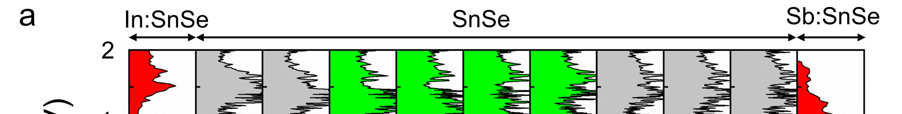
image.9.1[364*46]
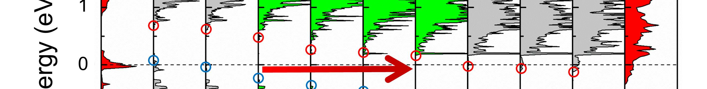
image.9.2[364*46]
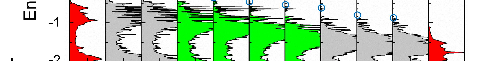
image.9.3[364*46]
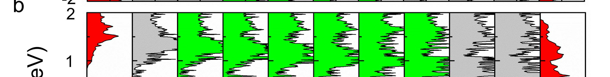
image.9.4[364*46]
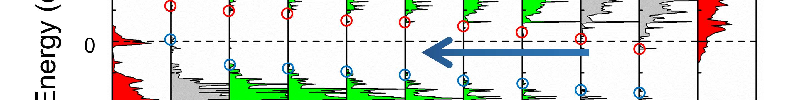
image.9.5[364*46]
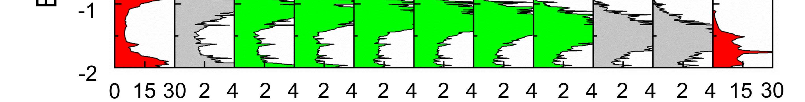
image.9.6[364*46]
Figure 5 | Layer-resolved local density of states (LDOS) for (a) right and (b) left ferroelectric polarization states.
Discussion
()
0F
k
=,k
GGTE
?
?
. (3)
Here
G
= 2e
/
h
is the conductance quantum, e is the electron charge and
h
is the Planck’s constant. The
T
(
E
F
,
k
||
) is
transmission coefficient at the Fermi energy for a given Bloch wave vector
k
||
= (
k
x
,
k
y
) in the two-dimensional Brillouin
zone, which corresponds to the periodicity in the plane of the junction. In terms of integrating the transmission probability
for states at the Fermi energy over the 2D Brillouin zone, we find that the total conductance
G
R
= 1.295×10
G
for the
polarization state pointing to the right electrode. However,
G
L
is decreased to be 8.306×10
G
when the ferroelectric
orientation is reversed to the left. Following the conventional definition
, the TER ratio here is defined as:
TER=
RL
L
GG
G
−
. (4)
As a result, the reversal of ferroelectric polarization in such 2D
p-
SC/FE/
n
-SC FTJ will lead to a significantly enhanced
TER effect, which is approximately about 1460
%. Note that the migrations of electrons or holes near the semiconductor
surfaces are nearly ignored during the ATK calculations, where only considering the electron cloud diffusion, making the
change of barrier width underestimated by ferroelectric polarization reversal. Hence, a giant TER effect can be expected in
the practical applications, which is in accord with the enhanced results reported in Wu’s work
38,40
.
In order to intuitively understand the large changes in the conductance ratio during polarization reversal, the
k
||
-
resolved transmission at
E
F
has been plotted in Fig. 6. For the in-plane ferroelectric polarization along
x
axis, the main
contribution to the transmission comes from the region around the edges of 2D Brillouin zone. However, we notice that the
transmission peak in the
P
-
x
state is significantly reduced compared to that of the
P
+
x
state, which verifies the characteristics
of a sizable TER effect existing in this proposed In:SnSe/SnSe/Sb:SnSe homostructure.
||
-resolved transmission in 2D Brillouin zone at the Fermi energy through the tunnel junction.
(a) Under
P
+
x
and
(b)
P
-
x
states. Polarization directions are shown by arrows. The two panels use the same color bar.
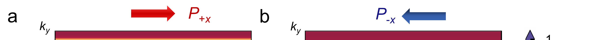
image.10.1[433*28]
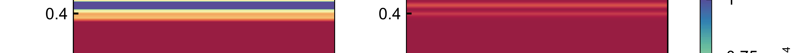
image.10.2[433*28]
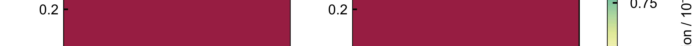
image.10.3[433*28]
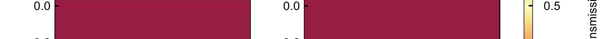
image.10.4[433*28]
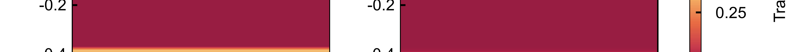
image.10.5[433*28]
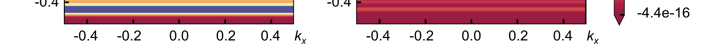
image.10.6[433*28]
Figure 6 | The k
Finally, we further study the electronic structure across the 2D
p-
SC/FE/
n
-SC FTJ device by carrying out the analysis
of real-space projected LDOS (PLDOS). The corresponding results for the two polarization states are plotted in Fig. 7,
where the band bending at the left interface (
L
interface
) and right interface (
R
interface
) are clearly displayed, revealing the
p
-
type and
n
-type doping features in the left and right electrodes, respectively. The green regions with high electronic density
of states demonstrate the doped semiconductor electrodes. Moreover, the tunneling barrier width can be defined by the
black regions without electronic states between the left and right electrodes. As expected, the effective tunneling regions
will stay away from the initial semiconductor/ferroelectric interfaces due to the interfacial metallization of ferroelectric
barrier. Note that the electrons tunnel across the junction under
P
-
x
state will experience a much wider barrier compared
with that of the
P
+
x
state, which is completely consistent with our model analysis and calculations.
p-
SC/FE/
n
-SC FTJ device with (a)
P
+
x
and (b)
P
-
x
states.
The
abscissa is the Cartesian coordinate of central region along the
x
-direction. The color bar on the right indicates the DOS amplitude.
E
ci
and
E
vi
are the
c
onduction band minimum and valance band maximum of the electrode with
i
-type (
i
=
p
,
n
) doping, respectively. The
Fermi level (i.e.,
E
Fp
and
E
Fn
) is set to zero. The interface of semiconductor/ferroelectric is initially set to be located around 35 Å and
114 Å.
To conclude, we have proposed an all-2D materials based ferroelectric tunnel junction with the structure configuration
of
p
-type semiconductor/ferroelectric/
n
-type semiconductor. We find that not only the tunneling barrier height but also the
barrier width can be continuously tunable as a result of the polarization reversal. In particular, the mechanism of barrier
width variation is not only ascribed to depletion/accumulation of majority carriers near the semiconductor surface in
response to the reversal of ferroelectricity, but also influenced by the reversible metallization of barrier near the ferroelectric
surface due to the band alignment. This well-designed 2D
p
-SC/FE/
n
-SC FTJ brings up a new idea approaching the giant
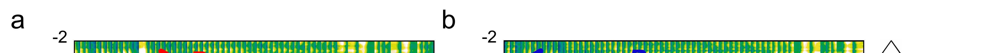
image.11.1[488*26]
image.11.2[488*26]
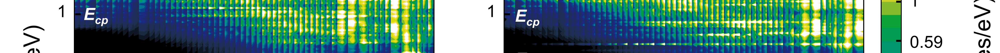
image.11.3[488*26]
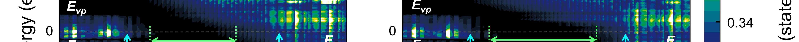
image.11.4[488*26]
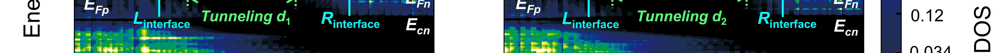
image.11.5[488*26]
 image.11.6[488*26]
image.11.7[488*26]
image.11.8[488*26]
image.11.6[488*26]
image.11.7[488*26]
image.11.8[488*26]
Figure 7 | Projected local density of states (PLDOS) across the 2D
TER effect for the non-volatile resistive switching memories, which is of great importance in paving the way for the
blueprint of the future nanodevice applications.
calculations.
The geometry optimizations and electronic structure calculations of slab models are performed
within density-functional theory (DFT) using the projector augmented wave (PAW) method
, as implemented in the Vienna
ab initio
Simulation Package (VASP)
61,62
. The exchange correlation potential is described by generalized gradient
approximation (GGA) of Perdew-Burke-Ernzerhof (PBE) functions
. The kinetic-energy cutoff of 500 eV is applied to the
plane wave expansion and a Γ-centered 1×12×1
k
-points grid is adopted for Brillouin zone sampling. All the structures are
optimized until the Hellmann-Feynman forces tolerance below 1 meV/Å and self-consistent convergence for electronic
energy is 10
eV. A vacuum space of 15 Å is used to avoid interactions between adjacent layers.
The device properties of the 2D-FTJs are calculated using density functional theory
plus non-equilibrium Green’s function formalism
64,65
(DFT+NEGF approach) as implemented in Atomistix ToolKit-Virtual
NanoLab (ATK-VNL) software package
. Double-ζ plus polarization basis set is employed, and a real-space mesh cut-off
energy of 80 Hartree is used to guarantee the good convergence of the device configuration. The electron temperature is
set at 300K. The 1×21×101
k
-points are used for the self-consistent calculations to eliminate the mismatch of Fermi level
between electrodes and central region. An increased number 201 of
k
-pints along
y
axis is adopted during the calculations
of transmission spectra and spatially resolved projected local density of states.
The data that support the findings of this study are available from the corresponding author upon
reasonable request.
1.
Scott, J. F. Applications of modern ferroelectrics
.
Science
, 954-959 (2007).
2.
Hoffman, J.
et al.
Ferroelectric field effect transistors for memory applications
.
Adv. Mater.
, 2957-2961 (2010).
3.
Garcia, V. & Bibes, M. Inside story of ferroelectric memories
.
Nature
, 279-281 (2012).
4.
Chanthbouala, A.
et al.
A ferroelectric memristor
.
Nat. Mater.
, 860-864 (2012).
5.
Kim, D. J.
et al.
Ferroelectric tunnel memristor
.
Nano Lett.
, 5697-5702 (2012).
6.
Garcia, V.
et al.
Giant tunnel electroresistance for non-destructive readout of ferroelectric states
.
Nature
, 81-84
(2009).
Methods
Ab initio
Quantum transport calculations.
Data availability.
References
7.
Tsymbal, E. Y., Gruverman, A., Garcia, V., Bibes, M. & Barthélémy, A. Ferroelectric and multiferroic tunnel junctions
.
MRS Bull.
, 138-143 (2012).
8.
Chanthbouala, A.
et al.
Solid-state memories based on ferroelectric tunnel junctions
.
Nat. Nanotech.
, 101-104 (2012).
9.
Garcia, V. & Bibes, M. Ferroelectric tunnel junctions for information storage and processing
.
Nat. Commun.
, 4289
(2014).
10.
Yin, Y. W.
et al.
Multiferroic tunnel junctions and ferroelectric control of magnetic state at interface (invited)
.
J. Appl.
Phys.
, 172601 (2015).
11.
Tian, B. B.
et al.
Tunnel electroresistance through organic ferroelectrics
.
Nat. Commun.
, 11502 (2016).
12.
Velev, J. P., Duan, C. G., Belashchenko, K. D., Jaswal, S. S. & Tsymbal, E. Y. Effect of ferroelectricity on electron
transport in Pt/BaTiO
/Pt tunnel junctions
.
Phys. Rev. Lett.
, 137201 (2007).
13.
Velev, J. P.
et al.
Magnetic tunnel junctions with ferroelectric barriers: prediction of four resistance states from first
principles
.
Nano Lett.
, 427-432 (2009).
14.
Tsymbal, E. Y. & Kohlstedt, H. Tunneling across a ferroelectric
.
Science
, 181-183 (2006).
15.
Ahn, C. H., Rabe, K. M. & Triscone, J.-M. Ferroelectricity at the nanoscale: local polarization in oxide thin films and
heterostructures
.
Science
, 488-491 (2004).
16.
Dawber, M., Rabe, K. M. & Scott, J. F. Physics of thin-film ferroelectric oxides
.
Rev. Mod. Phys.
, 1083-1130 (2005).
17.
Jia, C. L.
et al.
Unit-cell scale mapping of ferroelectricity and tetragonality in epitaxial ultrathin ferroelectric films
.
Nat. Mater.
, 64-69 (2007).
18.
Kim, D. J.
et al.
Room
‐
temperature ferroelectricity in hexagonal TbMnO
thin films
.
Adv. Mater.
, 7660-7665 (2014).
19.
Lee, D.
et al.
Emergence of room-temperature ferroelectricity at reduced dimensions
.
Science
, 1314-1317 (2015).
20.
Fong, D. D.
et al.
Ferroelectricity in ultrathin perovskite films
.
Science
, 1650-1653 (2004).
21.
Tenne, D. A.
et al.
Ferroelectricity in ultrathin BaTiO
films: probing the size effect by ultraviolet Raman spectroscopy
.
Phys. Rev. Lett.
, 177601 (2009).
22.
Yin, Y. W.
et al.
Enhanced tunnelling electroresistance effect due to a ferroelectrically induced phase transition at a
magnetic complex oxide interface
.
Nat. Mater.
, 397 (2013).
23.
Huang, W. C.
et al.
Interfacial ion intermixing effect on four-resistance states in La
0.7
Sr
0.3
MnO
/BaTiO
/La
0.7
Sr
0.3
MnO
multiferroic tunnel junctions
.
ACS Appl. Mater. Interfaces
, 10422-10429 (2016).
24.
Huang, W. C.
et al.
Solid-state synapse based on magnetoelectrically coupled memristor
.
ACS Appl. Mater. Interfaces
, 5649-5656 (2018).
25.
Choi, K. J.
et al.
Enhancement of ferroelectricity in strained BaTiO
thin films
.
Science
, 1005-1009 (2004).
26.
Lu, H.
et al.
Enhancement of ferroelectric polarization stability by interface engineering
.
Adv. Mater.
, 1209-1216
(2012).
27.
Fong, D. D.
et al.
Stabilization of monodomain polarization in ultrathin PbTiO
films
.
Phys. Rev. Lett.
, 127601
(2006).
28.
Junquera, J. & Ghosez, P. Critical thickness for ferroelectricity in perovskite ultrathin films
.
Nature
, 506-509
(2003).
29.
Spaldin, N. A. Fundamental size limits in ferroelectricity
.
Science
, 1606-1607 (2004).
30.
Duan, C. G., Sabirianov, R. F., Mei, W. N., Jaswal, S. S. & Tsymbal, E. Y. Interface effect on ferroelectricity at the
nanoscale
.
Nano Lett.
, 483-487 (2006).
31.
Gong, C.
et al.
Discovery of intrinsic ferromagnetism in two-dimensional van der Waals crystals
.
Nature
, 265-269
(2017).
32.
Huang, B.
et al.
Layer-dependent ferromagnetism in a van der Waals crystal down to the monolayer limit
.
Nature
,
270-273 (2017).
33.
Jiang, S. W., Shan, J. & Mak, K. F. Electric-field switching of two-dimensional van der Waals magnets
.
Nat. Mater.
, 406-410 (2018).
34.
Liu, F. C.
et al.
Room-temperature ferroelectricity in CuInP
S
ultrathin flakes
.
Nat. Commun.
, 12357 (2016).
35.
Ding, W. J.
et al.
Prediction of intrinsic two-dimensional ferroelectrics in In
Se
and other III
-VI
van der Waals
materials
.
Nat. Commun.
, 14956 (2017).
36.
Tong, W. Y., Gong, S. J., Wan, X. G. & Duan, C. G. Concepts of ferrovalley material and anomalous valley Hall effect
.
Nat. Commun.
, 13612 (2016).
37.
Wu, M. H., Dong, S., Yao, K. L., Liu, J. M. & Zeng, X. C. Ferroelectricity in covalently functionalized two-dimensional
materials: integration of high-mobility semiconductors and nonvolatile memory
.
Nano Lett.
, 7309-7315 (2016).
38.
Wen, Z., Li, C., Wu, D., Li, A. & Ming, N. Ferroelectric-field-effect-enhanced electroresistance in
metal/ferroelectric/semiconductor tunnel junctions
.
Nat. Mater.
, 617-621 (2013).
39.
Tsymbal, E. Y. & Gruverman, A. Ferroelectric tunnel junctions: beyond the barrier
.
Nat. Mater.
, 602-604 (2013).
40.
Xi, Z. N.
et al.
Giant tunnelling electroresistance in metal/ferroelectric/semiconductor tunnel junctions by engineering
the Schottky barrier
.
Nat. Commun.
, 15217 (2017).
41.
Mathews, S., Ramesh, R., Venkatesan, T. & Benedetto, J. Ferroelectric field effect transistor based on epitaxial
perovskite heterostructures
.
Science
, 238-240 (1997).
42.
Liu, X. H., Burton, J. D. & Tsymbal, E. Y. Enhanced tunneling electroresistance in ferroelectric tunnel junctions due
to the reversible metallization of the barrier
.
Phys. Rev. Lett.
, 197602 (2016).
43.
Pantel, D. & Alexe, M. Electroresistance effects in ferroelectric tunnel barriers
.
Phys. Rev. B
, 134105 (2010).
44.
Velev, J. P., Burton, J. D., Zhuravlev, M. Y. & Tsymbal, E. Y. Predictive modelling of ferroelectric tunnel junctions
.
npj
Comput. Mater.
, 16009 (2016).
45.
Gruverman, A.
et al.
Tunneling electroresistance effect in ferroelectric tunnel junctions at the nanoscale
.
Nano Lett.
,
3539-3543 (2009).
46.
Zhuravlev, M. Y., Sabirianov, R. F., Jaswal, S. S. & Tsymbal, E. Y. Giant electroresistance in ferroelectric tunnel
junctions
.
Phys. Rev. Lett.
, 246802 (2005).
47.
Soni, R.
et al.
Giant electrode effect on tunnelling electroresistance in ferroelectric tunnel junctions
.
Nat. Commun.
,
5414 (2014).
48.
Tian, B. B.
et al.
Space-charge effect on electroresistance in metal-ferroelectric-metal capacitors
.
Sci. Rep.
, 18297
(2015).
49.
Gomes, L. C. & Carvalho, A. Phosphorene analogues: Isoelectronic two-dimensional group-IV monochalcogenides
with orthorhombic structure
.
Phys. Rev. B
, 085406 (2015).
50.
Xu, L., Yang, M., Wang, S. J. & Feng, Y. P. Electronic and optical properties of the monolayer group-IV
monochalcogenides MX (M= Ge, Sn; X= S, Se, Te)
.
Phys. Rev. B
, 235434 (2017).
51.
Shen, X. W., Tong, W. Y., Gong, S. J. & Duan, C. G. Electrically tunable polarizer based on 2D orthorhombic
ferrovalley materials
.
2D Mater.
, 011001 (2018).
52.
Fei, R. X., Kang, W. & Yang, L. Ferroelectricity and phase transitions in monolayer group-IV monochalcogenides
.
Phys. Rev. Lett.
, 097601 (2016).
53.
Chang, K.
et al.
Discovery of robust in-plane ferroelectricity in atomic-thick SnTe
.
Science
, 274-278 (2016).
54.
Wu, M. H. & Zeng, X. C. Intrinsic ferroelasticity and/or multiferroicity in two-dimensional phosphorene and
phosphorene analogues
.
Nano Lett.
, 3236-3241 (2016).
55.
Fang, Y. W.
et al.
First-principles studies of multiferroic and magnetoelectric materials
.
Sci. Bull.
, 156-181 (2015).
56.
Yang, Q., Xiong, W., Zhu, L., Gao, G. Y. & Wu, M. H. Chemically functionalized phosphorene: Two-dimensional
multiferroics with vertical polarization and mobile magnetism
.
J. Am. Chem. Soc.
, 11506-11512 (2017).
57.
Gao, Y. C.
et al.
A first-principles study on the intrinsic asymmetric ferroelectricity of the SrTiO
–BaTiO
–CaTiO
tricolor superlattice at the nanoscale
.
J. Phys. Condens. Matter
, 165901 (2013).
58.
Gerra, G., Tagantsev, A. K. & Setter, N. Ferroelectricity in asymmetric metal-ferroelectric-metal heterostructures: A
combined first-principles-phenomenological approach
.
Phys. Rev. Lett.
, 207601 (2007).
59.
Landauer, R. Electrical resistance of disordered one-dimensional lattices
.
Phil. Mag.
, 863-867 (1970).
60.
Blöchl, P. E. Projector augmented-wave method
.
Phys. Rev. B
, 17953-17979 (1994).
61.
Kresse, G. & Furthmüller, J. Efficient iterative schemes for ab initio total-energy calculations using a plane-wave basis
set
.
Phys. Rev. B
, 11169-11186 (1996).
62.
Kresse, G. & Joubert, D. From ultrasoft pseudopotentials to the projector augmented-wave method
.
Phys. Rev. B
,
1758-1775 (1999).
63.
Perdew, J. P., Burke, K. & Ernzerhof, M. Generalized gradient approximation made simple
.
Phys. Rev. Lett.
, 3865-
3868 (1996).
64.
Taylor, J., Guo, H. & Wang, J.
Ab initio
modeling of quantum transport properties of molecular electronic devices
.
Phys. Rev. B
, 245407 (2001).
65.
Brandbyge, M., Mozos, J.-L., Ordejón, P., Taylor, J. & Stokbro, K. Density-functional method for nonequilibrium
electron transport
.
Phys. Rev. B
, 165401 (2002).
66.
Atomistix ToolKit version 2014.3-Virtual NanoLab version 2017.2,
QuantumWise
A
/
S
(www.quantumwise.com)
.
This work was supported by the National Key Project for Basic Research of China (Grant No. 2014CB921104), National
Key R&D Program of China (2017YFA0303403), the National Natural Science Foundation of China (Grant No. 11774092,
51572085) and Shanghai Science and Technology Innovation Action Plan (No. 17JC1402500). Computations were
performed at the ECNU computing center.
C.G.D conceived the idea and supervised the work. X.W.S, Y.W.F and B.B.T did the model analysis. X.W.S carried out the
first-principles calculations and non-equilibrium Green’s function transport calculations and did the data analysis with the
assistance of Y.W.F. B.B.T and Y.W.F contributed to the interpretation of the results. X.W.S, Y.W.F and C.G.D co-wrote
the paper. All the authors reviewed and modified the manuscript.
†
Present address: Department of Materials Science and Engineering, Kyoto University, Kyoto 606-8501, Japan
Acknowledgement
Author contributions
Additional information
Competing financial interests: The authors declare no competing financial interest.